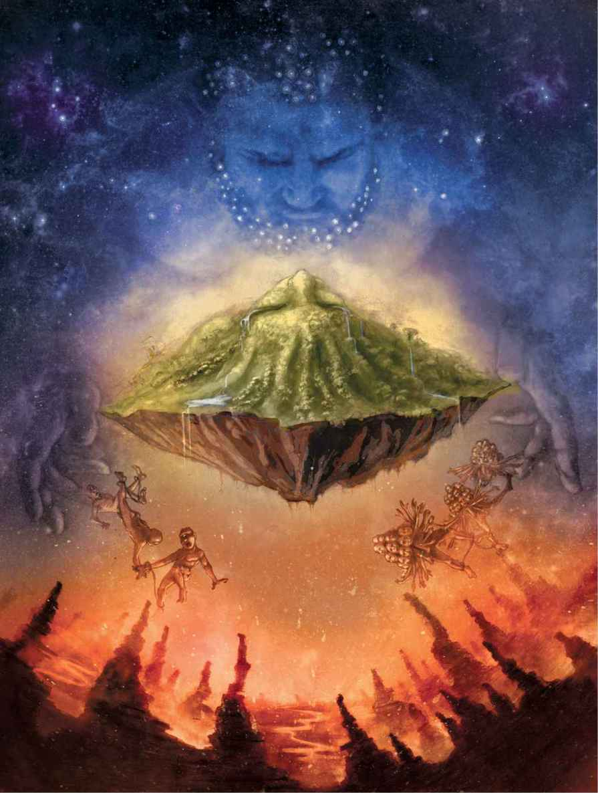

Greek mythology is probably one of the most well-known. The following is a table describing the main Greek Gods.
| Name | Description | Offspring of... |
|---|---|---|
| Zeus | The ruler of the gods. He is considered the master of the sky, controlling lightning, storms, and much more. | Kronos and Rhea |
| Hera | Wife and sister of Zeus. Goddess of marriage and birth. | Kronos and Rhea |
| Poseidon | The ruler of the waters, from oceans to streams. He controls earthquakes and created horses out of sea foam. | Kronus and Rhea |
| Hades | The ruler of the underworld. He possesses the precious minerals of the world. | Kronus and Rhea |
| Demeter | The Goddess of harvest. She is also considered the goddess of sacred law and the cycle of birth and death. | Kronus and Rhea |
| Hestia | The Goddess of the hearth. She stepped down from the 12 Olympians to allow a position for Dionysus. | Kronus and Rhea |
| Athena | The Goddess of wisdom, courage, strategic warfare, strategy, the arts and more. | Zeus and Metis |
| Apollo | The God of healing, medicine, music, poetry, and archery. He is the twin brother of Artemis. | Zeus and Leto |
| Artemis | The Goddess of hunting, wild animals, wilderness, and childbirth. She is the twin sister of Apollo. | Zeus and Leto |
| Ares | The God of war, and the violent and physical aspects of it. | Zeus and Hera |
| Aphrodite | The Goddess of love, beauty, pleasure, passion and procreation. | Drop of Ouranos's blood mixed with the foam of the sea. |
| Hephaestus | The god of fire, metalworking, forges and the art of sculpture. | Hera |
| Hermes | The primitive God of wealth, luck, sleep, languages, and much more. He is the messenger of the Gods. | Zeus and Maia |
| Dionysus | The Greek God of wine, winemaking, theater, religious ecstasy, and madness. | Zeus and Semele |
The Beginning
Gaea was the first Greek deity, and she was the Earth. She created Ouranos, the sky. They wed and birthed many children. Yet Ouranos disliked these children and would continuously kill them. Eventually, Gaea gave birth to the titans. Ouranos did not kill them, to Gaea's joy. Yet Ouranos was an incredibly absent father. Gaea and Ouranos had their disputes, and soon barely communicated. Gaea's anger grew, and she told the titans, her children, to kill their father. Many of the titans were vary of this act, yet the youngest, Kronos, stepped up. Four other titans agreed to help him, while the others scattered. They formed a plan.
Gaea called for Ouranos. She said she forgave him for killing the previous creatures she had given birth to, which is shown as the following figures in the above picture. He joined her on Earth, for Gaea could take the form of a human, on Earth. As they settled down, Gaea soothed him, making him less suspicious od her politeness, for she had resented him. Yet he had missed her, so his caution was lowered. As this occurred, Kronos, and his four brothers, Koios, Krios, Hyperion, and Iapetus, hid nearby. The four brothers jumped out and held different parts of Ouranos down. Kronos then emerged and killed his father. The last words of Ouranos promised that Kronos would be overcome by his own sons. Despite the death of Ouranos, the sky still held up, but Ouranos could barely form anymore, even though he, as a god, was immortal. Kronos became the new ruler, and his four brothers who helped him became the four points of the world. The blood of Ouranos created nature spirits, and the goddess Aphrodite.
The Story of the Downfall of Kronos
After Ouranos was defeated, Gaea fell into a deep slumber. Kronos, the new ruler of the cosmos, was feared by many of his siblings. Yet one did not seem to mind him as much, Rhea. Rhea, his sister, was asked by Kronos to marry him, and she agreed. She gave birth to the first god, who looked unlike a titan. Afraid of Ouranos's last words, he decided to not have children. Yet when Rhea gave birth, Kronos, in fear, swallowed her. Despite this, Hestia grew in his stomach, as Rhea wailed in sorrow. After Hestia, Rhea gave birth to Demeter, Hera, Hades, and Poseidon, who were all swallowed be Kronos. Yet when Rhea discovered her pregnancy for the sixth time, she hid it. She gave birth in Crete, with the help of nature spirits. She returned with a rock instead of the newborn, Zeus. Rhea, according to the ancient laws, was forced to present her child to her husband, and she presented the rock instead. She cried as Kronos ate the rock and visited Crete often. Eventually, Zeus grew to a god, and Rhea told him of his father. Determined to save his siblings, he pretended to be Zeus's jester and drink maker, allowing him to get close to Kronos. After Zeus earned his trust, he fed Kronos a drink that forced to throw up his swallowed children. They then fled, yet soon returned and took over. Zeus became the new ruler.
The Tales of Athena
Zeus married Hera, yet he often had children with others, both gods, titans, and mortals. Yet Zeus was told that his son would dethrone him, like he did to Kronos, especially if this son was a child of Metis. Thus, when Metis, a titan, was pregnant, Zeus fooled her. She tricked her into turning into a fly, and then swallowed her whole. Yet what Zeus did not know, was that Athena was a daughter of Metis. As time went by, Zeus began to have headaches. His headaches worsened, to the degree where he asked his wife's son, who was birthed only by Hera, due to her desire to get payback on Zeus's infidelities, to break open his skull. When the son of Hera did this, Athena emerged in full armour. She was born from thoughts, as she born from the brain of Zeus. Click here to find out more about the adventures of Athena.
To delve deeper into the topic of the differences and similarities between Roman and Greek mythology, we must analyze the history of Rome and Greece. The predecessors of the Romans were the Greeks, so lots of the Greeks myths were converted to Roman myths. The Roman myths and Gods were considered richer, more mature, and stronger than their Greek counterparts. When one examines the changes now, we see only the changes in names, but the wording in the myths used indicate how the Romans viewed the Roman Gods compared to the Greek Gods. The Roman Gods were given names that correlate with what was thought a planet at that time. These planets are Mercury, Jupiter, Saturn, Uranus, Pluto, Neptune, and Venus. Despite the changes made by the Romans, Greek influence was everywhere in Rome, such as in the architecture, adornments of materials, temples and mosaics. The main symbol of war between the Greeks and Romans, which lead to the beginning of Roman mythology is the Trojan War. The Trojan war lead to the birth of Romulus and Remus, these figures were not based on any Greek figures. Some differences in the method of communication of myths between the Greeks and Romans is how the stories are passed on. In Greek mythology, there are many varying stories, this is because the fables were told orally, meaning that it would be unbelievably easy to change minor details. As a result, Greek myths vary a lot more than Roman myths. Roman mythology was passed on by being written in prose, which made it apart of history, and considerably a foundation of Rome. These are some of the many resemblances and distinctions between Roman and Greek mythology.
Return to the home page.